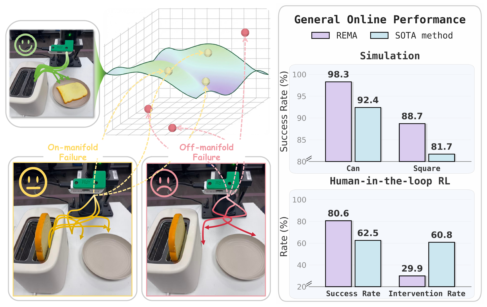
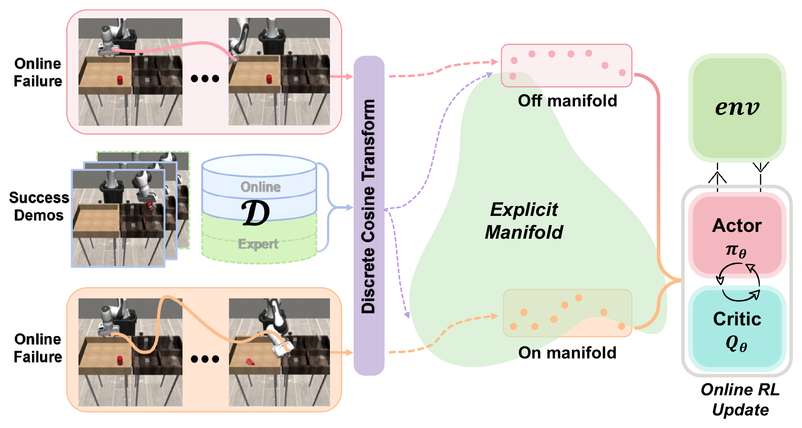
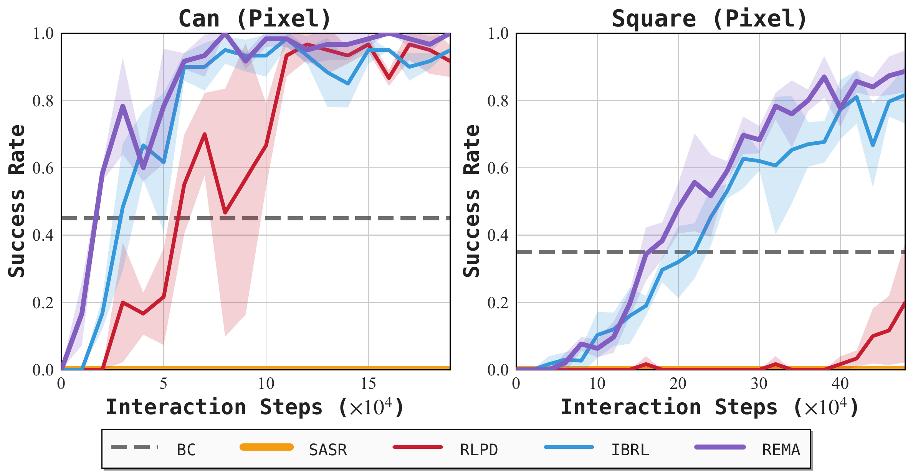
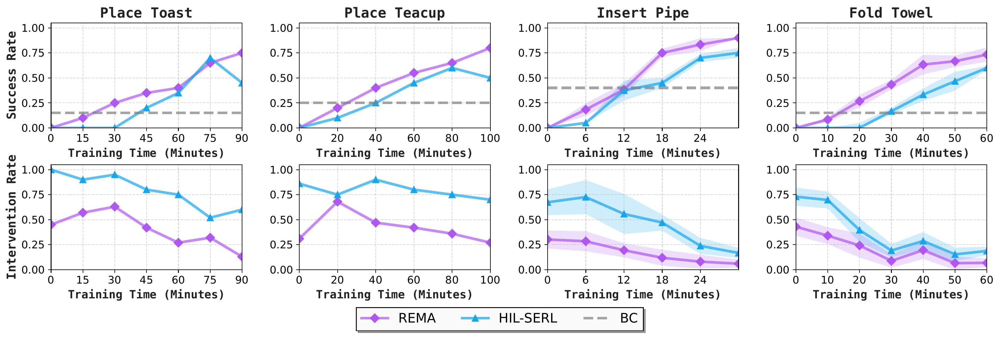
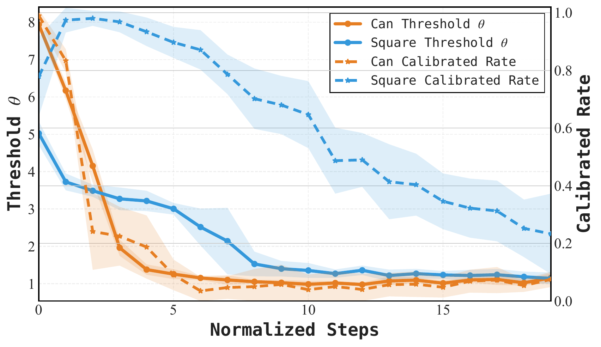
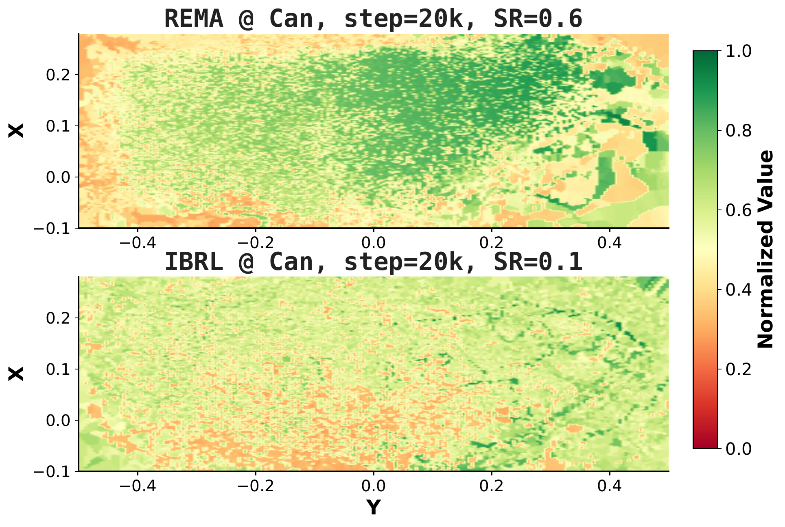
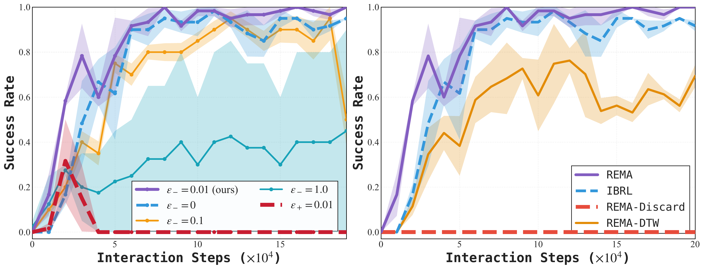
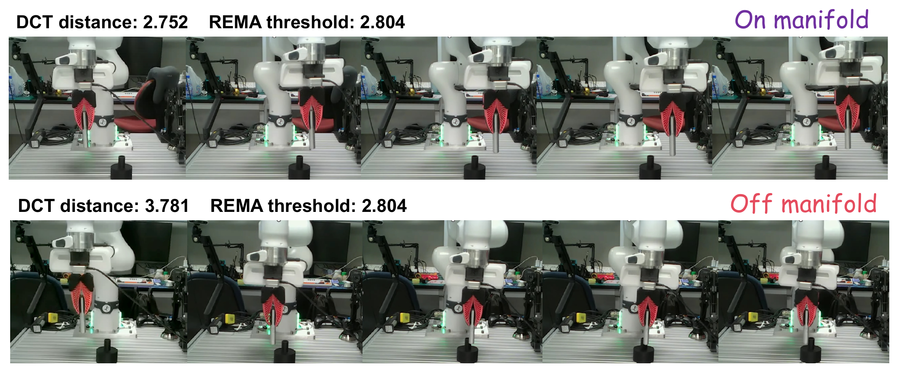

Efficient Online Robotic Reinforcement Learning with Explicit Manifold Alignment
IEEE Robotics and Automation Letters (RA-L), 2026
1Nanyang Technological University
2Shenzhen International Graduate School, Tsinghua University
3Institute for Infocomm Research, A*STAR
†Corresponding author
REMA penalizes failed trajectories that deviate from the manifold of successful behavior and leaves failures close to it unchanged, as a reward calibration on top of standard online RL.

Online reinforcement learning (RL) enables robots to continuously improve through real-world interaction, yet achieving high success rates in contact-rich manipulation remains challenging due to sparse binary rewards. Conventional reward-shaping methods rely on hand-designed goal-proximity heuristics and seldom differentiate informative near-success failures from uninformative divergent trials, leading to inefficient exploration and potential reward hacking. By contrast, we propose Reinforcement Learning with Explicit Manifold Alignment (REMA) to refine credit assignment by penalizing uninformative deviations while preserving informative trials. Specifically, given a small set of successful demonstrations, we formulate that trajectory informativeness can be quantified based on the deviation from the manifold of successful behaviors, where exploring off-manifold state space introduces task-irrelevant noise into value estimates. We first construct a reference manifold via spectral compression of successful trajectories, where low-frequency components encode task-relevant motion patterns and serve as a proxy for informativeness. During online learning, the informativeness of failed trajectories is assessed via normalized spectral distance to the manifold, with distant trajectories receiving penalties to suppress their influence on value learning. Experiments show that REMA outperforms the evaluated baselines on the studied simulation and real-world tasks. In human-in-the-loop real-robot RL, it lowers intervention from 60.8% to 29.9% and improves autonomous success from 62.5% to 80.6%.
Under a binary success reward, a rollout that narrowly misses a grasp and a rollout that wanders in free space both receive zero reward. REMA separates the two by comparing each failed trajectory with successful behavior. It only post-processes the rewards stored in the replay buffer: the RL algorithm, the policy architecture and the task success condition are unchanged.

| if the episode succeeds | ||
| if it fails and is on-manifold | ||
| if it fails and is off-manifold |
The design is asymmetric on purpose: off-manifold failures are penalized, but on-manifold failures are not rewarded, which avoids dense positive rewards that invite reward hacking. Successful episodes always keep their full reward, regardless of their spectral distance.
Human-in-the-loop training from scratch on Galaxea-A1 and Franka Research 3, compared with HIL-SERL. Both methods use the same 20 demonstrations and the same intervention device (6D SpaceMouse); REMA only changes the rewards of the collected trajectories. Training videos are sped up, and parts of the training are cut to keep them short.
The videos on this page are encoded with H.265 (HEVC), which this browser does not appear to decode, so only still frames are shown. Safari, or Chrome/Edge on a device with HEVC hardware decoding, will play them.
Pick the toast from the toaster and place it on a plate.
Grasp the target teacup among distractors and place it on a plate.
On Galaxea-A1 the camera view may shift slightly during training because of how the camera is mounted.
Tight-tolerance, contact-rich insertion.
Fold a deformable towel.
In the Franka Research 3 videos of REMA, failed episodes are labelled as on-manifold or off-manifold for visualization.
Evaluation rollouts of the trained Insert Pipe policies; in some of them the base is moved by hand during execution. These are selected examples, and the paper does not report a success rate for this setting.
HIL-SERL
REMA
On RoboMimic Can and Square, REMA is compared with BC, IBRL, RLPD and SASR using identical seeds and hyperparameters (mean and standard deviation over 3 runs). In this setting it reaches 1.2× faster convergence and a 7.4% higher success rate.

Under the same wall-clock training budget, REMA lowers the human intervention rate from 60.8% to 29.9% and increases autonomous success from 62.5% to 80.6% relative to HIL-SERL.

Starting from a Cal-QL pretrained policy, REMA is applied during online collection and replay-buffer updates and compared with WSRL under a matched 30-minute online budget. Successes out of 20 autonomous trials:
| Task | Pretrained (Cal-QL) | WSRL @ 30 min | REMA @ 30 min |
|---|---|---|---|
| Place Teacup | 9/20 | 13/20 | 16/20 |
| Insert Pipe | 11/20 | 17(±2)/20 | 19(±1)/20 |
| Fold Towel | 6/20 | 11(±3)/20 | 14(±2)/20 |
Place Teacup (Galaxea-A1) is a single online fine-tuning run; Insert Pipe and Fold Towel (Franka Research 3) report mean ± std over three independent runs.
Early in training most failures are erratic and the fraction of failures classified as off-manifold is close to 1.0. As the policy aligns with the manifold this fraction drops (below 0.05 on Can), so the penalty is strong during random exploration and fades as the policy matures.


A small penalty (ε = 0.01) works best; large penalties lead to premature value collapse, and positive bonuses for on-manifold failures lead to reward hacking. Discarding off-manifold trajectories instead of penalizing them gives 0% success, and replacing the DCT distance with dynamic time warping fails to improve learning.

The spectral distance captures the global shape of a motion, which is what makes it robust to execution-speed variability, but it is less sensitive to the spatial outcome and to localized irregularities: a spatially distant rollout can still be judged on-manifold, and a near-success rollout with local hesitation can be judged off-manifold.

Failure study
The single-Gaussian manifold assumes one mode of success; tasks with qualitatively different solutions would need per-cluster statistics or a mixture. Although successes always keep their reward, REMA still favors known motion structure and may slow the discovery of very different strategies. It works on end-effector trajectories, which suits quasi-static manipulation; timing-sensitive tasks may need time-aware representations, and localized contact events may call for multi-resolution or learned manifolds.
@article{guo2026rema,
title={Efficient Online Robotic Reinforcement Learning with Explicit Manifold Alignment},
author={Guo, Wenkai and Tang, Peizhi and Bai, Yukun and Yan, Ziming and Deng, Haoyuan and Lu, Guanxing and Li, Shijie and Wang, Ziwei},
journal={IEEE Robotics and Automation Letters},
year={2026},
url={https://ieeexplore.ieee.org/abstract/document/11668937}
}